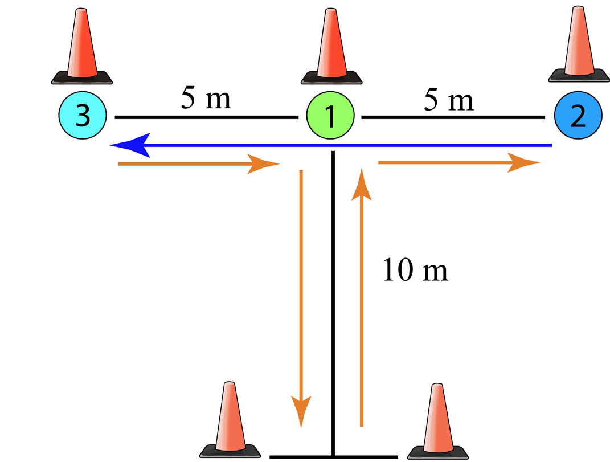

Activity 3.15
- 1.Perform the 3-hop test to measure your power
- 2.Perform various exercises for developing power
Agility
It is the ability of the body to quickly change direction accurately in response to a stimulus. The agility T-test is commonly used in measuring body agility.
Exercises for improving agility
Different drills can be used to improve agility, some of them are: T-drills, shuttle runs, high knee drills, ladder drills, hurdle drills, and cone drills.
Here is how to perform the agility T-drills:
- (i) Start on the starting cone, as shown in Figure 3.12;
- (ii) Sprint to cone 1 and touch the base with the left hand;
- (iii) Turn right and shuffle sideway to cone 2, and also touch the base with the right hand;
- (iv) Then, shuffle sideways to the left to cone 3 and touch the base with the left hand;
- (v) Shuffle back to cone 1 touch with the right hand, then sprint back to the finishing cone; and
- (vi) Repeat the procedures several times for better outcome.
